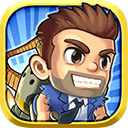
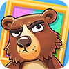

Halfbrick is a successful games company based in Brisbane, who has developed hugely popular mobile games such as Fruit Ninja and Jetpack Joyride.
As part of the marketing team since 2012, I have been responsible for creating and running all of our public websites, seen by over 1 million visitors each month.
Improvements to Halfbrick's websites have helped traffic and conversions grow significantly since I joined.
I also helped support the release of a dozen new games to multiple platforms (Android, iOS, Amazon, Xbox One) and run numerous campaigns for game update and events.
Key roles
- Designing responsive websites for all Halfbrick brands
- Managing email campaigns, promotions and competitions
- Writing proposals, collaborating with marketing and game teams for content
- Creating game assets, banners and other media for use on social channels
- Optimising websites for performance, speed and SEO
- Sys-admin for Linux servers on Amazon Web Services
- Building internal tools, plus scripts to handle app deeplinking, geo-targeting etc.
Case Study
Problem
The previous Halfbrick website was a simple, non-responsive WordPress blog. Our audience mainly visits via mobile, so it was crucial that the site adapt to any device size and load quickly.
The site also needed to adapt to changing marketing goals and new game content.
Solution
I rebuilt the Wordpress site using a responsive grid and adaptive layout.
To speed up the site, I moved all static assets to a CDN and used Varnish and APC caches, drastically reduced the database calls and used transients to cache occasionally modified content. Other techniques like deferring Javascript and lazy-loading images were also employed.
Results
Visitors spent more time on the site and the initial load time reduced from over 10 seconds down to 1.5 seconds.
Game Websites
Each game Halfbrick releases also requires a promotional website. I have designed websites for all games we've released since 2012.
For each site, I prepared a brief and mockups for the game team's feedback. I then collaborated with the game team to create the visual design, content, responsive website and related collateral. All sites are hosted on dedicated server on AWS.
Click on an icon to view the website for that game.
- Star Skater
- Jetpack Joyride
- Monster Dash
- Band Stars
- Bears vs. Art
- Yes Chef
- Radical Rappelling
- Colossatron
- Fish out of Water
Team Dashboards
The development teams at Halfbrick needed custom dashboards to track their project's progress. While working at Halfbrick, I built a number of dashboards to fulfill the team's requirements, including the ones below.
These dashboards are designed to be displayed fullscreen on a wall-mounted TV and viewed from a distance, so I used a dark background for less distracting glow.
Release Calendar
This calendar was made for the producers to keep track of upcoming release dates.
Releases can be edited, moved and removed directly on the calendar or via an Excel spreadsheet where the data is stored (some producers preferred this).
Each day, a cron job compares the current calendar with yesterdays and sends out an email digest of all the changes.
TestTrack Bug Tracker Dashboard
This dashboard gives an overview of the bugs in the current software project. It displays the history of bugs filed and filters bugs by their type, priority and assigned team member. The data is pulled from TestTrack via a Python backend and periodically updates.
There's 8-10 different projects running at any one time, which all use this dashboard.
Project Burndown Chart
This dashboard tracks how the team is progressing through its current 2 week sprint.
The data is pulled daily from the sprint's Trello board. Each task on the board has an number of hours assigned to it. When tasks are completed, the dashboard shows the remaining hours required to complete the sprint.
Filters allow you to view Code, Art and Design as separate burndown charts.
Branding
In 2014, I was asked to investigate refreshing the Halfbrick logo.
A limitation with the existing logo was it can only be displayed on a white or black background. We needed it to work across all of Halfbrick games, whose brandings were very colourful.
In the version above, the wordmark conveys the playful character of the brand without needing the brick icon, and it works on any coloured background which helps tie in with each game's branding.
Halfbrick didn't end up adopting a new logo, but it was helpful to explore alternatives.
Game on!
To accompany the release of Colossatron, as part of the marketing, I made an online mini-game: Mini World Threat. This was built in HTML5 canvas and used Firebase for the leaderboard. The game was hosted on miniworldthreat.com, but has since been removed. You can still play the game here.
The game controls are keyboard only. Can you beat 2,000 points?
View on desktop to play.